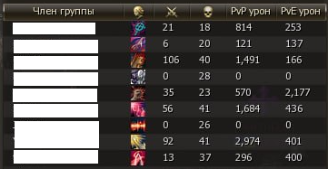

На этой неделе ещё никто не загружен.
До 9 скриншотов со списком ников. Каждый распознаётся отдельно — если один собьётся, остальные не пострадают.
Каждая календарная неделя (понедельник–воскресенье) — свой отдельный список участников клана. Переключайтесь между неделями стрелками ◀/▶ или кнопкой «Сегодня».
Загрузка. Нажмите «+ Добавить перепись», выберите до 9 скриншотов со списком участников — подойдёт, например, скрин окна группы клана с никами, классами и статистикой. Распознавание само вычленит только ники, остальное (иконки, урон, киллы) игнорирует.

Перед сохранением проверьте распознанные ники — чипы с крестиком можно убрать, если что-то распозналось неверно, или дописать ник вручную. Затем нажмите «Сохранить перепись».
Правки. Крестик у ника в списке недели убирает его. Кнопка 🗑 включает выбор сразу нескольких ников для удаления. Кнопка ⤢ разворачивает список на весь экран.